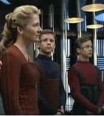

Wysanti |
|
|||
|  |
Specie umanoide del quadrante Delta. Il primo contatto con questa specie
avviene all'inizio del 2377
quando Janeway affida loro Azan, Rebi e
Mezoti. Azan e Rebi appartengono a questa specie. È usanza dei Wysanti non dirsi
addio quando ci si lascia.